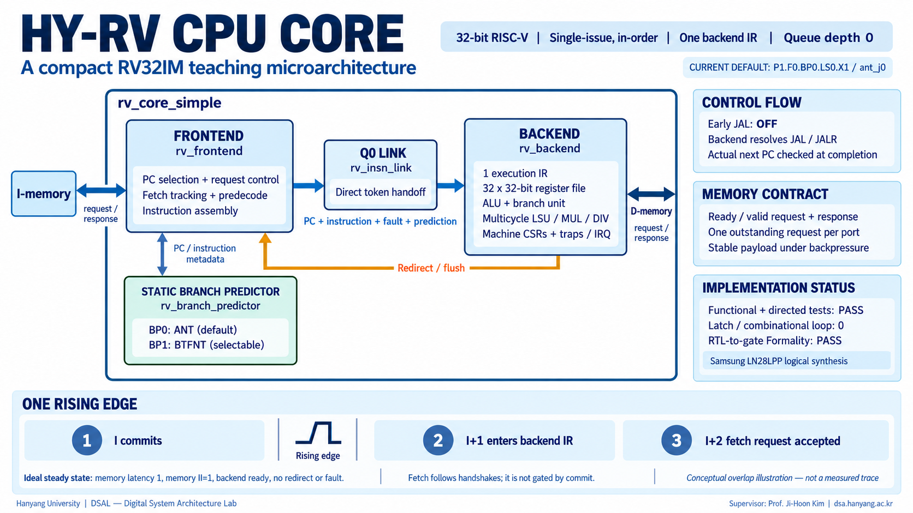

HY-RV CPU: current microarchitecture
The default lab CPU is P1.F0.BP0.LS0.X1 / ant_j0, using the local source snapshot in rtl/. The application is freestanding RV32IM/ILP32 in machine mode, with a 32-bit little-endian datapath, 32 integer registers, and a shared 1 MiB SRAM in the simulation harness. SRAM is outside the CPU.

The English illustration above was generated for this HY-RV design. It is a conceptual architecture and ideal overlap illustration, not a measured trace. The original generated PNG is 1672×941, approximately 16:9; it is not a native 4K image. The D-memory label denotes the external D port. See the image review, original prompt, and asset provenance.
1. Start with the whole system
The testbench instantiates the stable teaching_cpu compatibility wrapper and a shared SRAM model. The wrapper instantiates the actual rv_core_simple core. Independent instruction and data channels use ready/valid requests and responses; they are transaction interfaces, rather than bare SRAM address/data/enable pins. The memory adapter owns physical memory timing and response holding.
One request per port can be outstanding, with ID zero. Valid and all payload remain stable while ready is low. Each accepted read or write gets exactly one response after acceptance. The default ii1 memory adapter can consume an old response and accept the replacement request at the same edge. The optional frozen adapter preserves the old bubble-producing timing for comparison.
2. Read the four sibling blocks
| Block | Responsibility | Storage / timing |
|---|---|---|
rv_frontend / F0 | Select request PC, track the fetch owner, assemble instruction/fault metadata, ask the predictor | Holds request/owner/control metadata; no instruction response buffer |
rv_insn_link / Q0 | Forward instruction token and ready; gate tokens on flush | Combinational, depth 0; no queue entry or pipeline register |
rv_backend / P1 | Hold one execution IR; decode, RF, ALU, branch, LSU, MUL/DIV, CSR/trap/retirement | One occupied instruction at a time; multicycle operations retain that IR |
rv_branch_predictor / BP0 or BP1 | Form the static predicted successor from PC/instruction metadata | A sibling policy block, not an extra pipeline stage |
Frontend submodules are gen_pc_nxt, fetch_ctrl, fetch_tracker, rv_branch_predecode, and insn_assemble. Module boundaries do not imply separate pipeline stages. The backend checks the actual successor at completion and redirects/flushes younger work when it differs from the saved prediction.
BP0 ANT predicts conditional branches not taken. BP1 BTFNT predicts backward conditional branches taken and forward ones not taken. EARLY_JAL_EN=0 in both active presets: JAL/JALR are resolved by the backend. Dynamic BP2–BP4 and a positive-depth instruction queue are future work.
3. Understand one rising edge
In ideal steady state, with instruction response latency 1, memory initiation interval 1, a ready backend, and no redirect/fault, the same rising edge can:
Retire instruction I.
Admit I+1 into the backend IR.
Accept the fetch request for I+2.
This is a conditional throughput example. Fetch generation follows token/owner capacity and handshakes; it is not gated directly by a commit pulse. An empty backend can request work without a retirement. During a long-running operation, the SRAM adapter holds a valid instruction response until admission. F0 does not copy it into a hidden response buffer. Load/store, multiply, and divide remain multicycle operations.
4. Inspect actual activity
Run make hw-sim APP=04_muldiv TRACE=1 and open its generated trace report. The viewer guide explains pre-edge samples, request/response acceptance, IR admission, retirement, and RF writes. Those are separate events. The native SVG maps functional regions to the current RTL; it is a design diagram whose highlights come from recorded traces.

5. Keep source and evidence together
Logical synthesis/equivalence and cycle simulation do not establish post-layout clock frequency or tapeout signoff.
Source: docs/core-overview.md. This manual also works offline. Measurements appear only after you run the experiments.